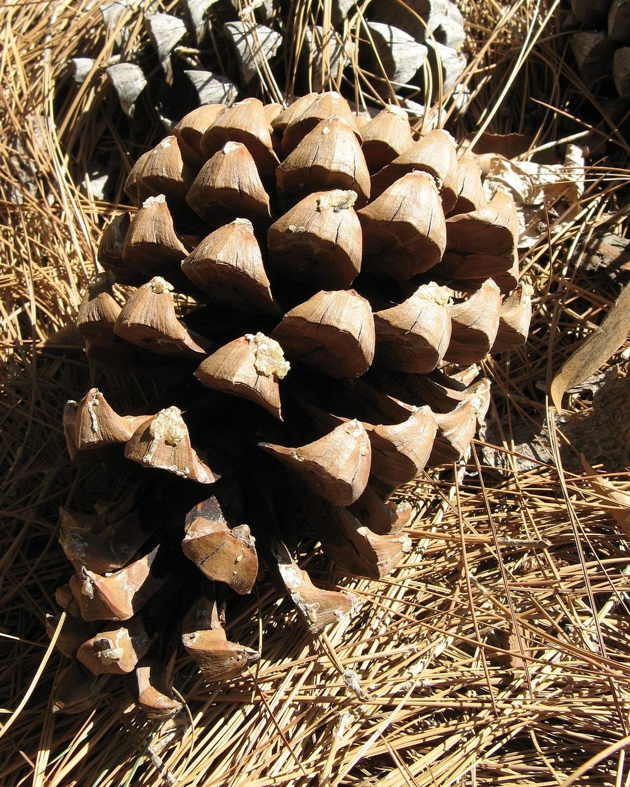
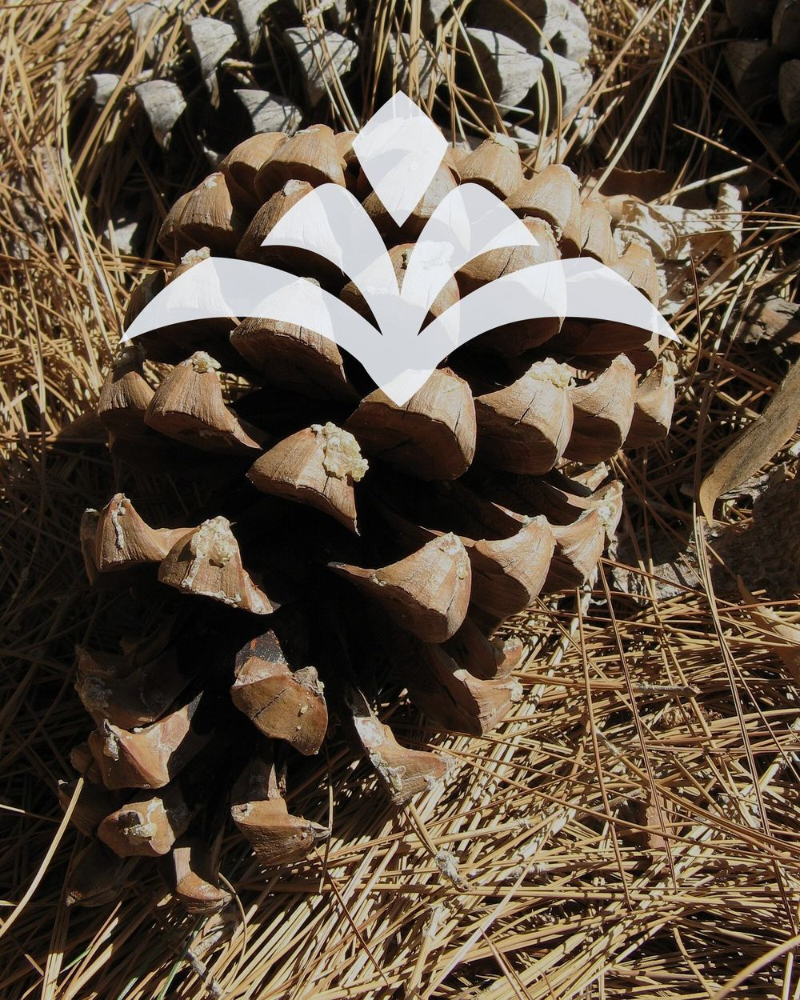

The tip
Chir pine grows across the Kumaon foothills. Its cone stands tip-up, and every woody scale ends in a hard knob that rises to a point of its own. Seen from the front, that knob is a diamond.
The mark draws it once, at the top, as a tall lens with a sharp tip and a sharp base. It is the highest point of the mark, the way it is the highest point of the cone.